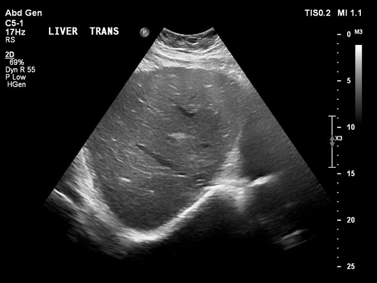

1
Talk to your GP about Liver Testing
Talk to your GP about getting your liver tested. These initial tests usually include liver enzymes such as:
ALTAlanine Transaminase
ASTAspartate Transaminase
ALPAlkaline Phosphatase
GGTGamma-Glutamyl Transferase
If any concerns come up, your GP can refer you to a hepatologist (liver specialist) for further assessment and care.

2
Then what?
If your family doctor sees any abnormal results on your initial lab tests above, they will then order an ultrasound of the liver and some extra tests.
These might include but are not limited to:
- 1Hemoglobin A1C and Fasting Blood glucose (markers of whether you might have diabetes)
- 2Lipid Panel (to check if your cholesterol or fat storage molecules are high)
- 3Tests for infection with Hepatitis B or C (many people might have been infected at some point in time and don't know it!)
- 4Screening for autoimmune liver disease
- 5Ferritin, Total Iron Binding Capacity (TIBC)
The liver specialist with Calgary Liver Unit (calgaryliverunit.com) can help guide some of these tests. Your GP can request a review of your file through Hepatology Central Access Triage or get telephone advice through specialist link.

Source: Radiopaedia🔍
Don't have a GP?
albertafindaprovider.ca is a great website that allows you to put in your address and find out which family doctors are accepting patients near you.
Have questions about liver health?
Our team is here to help connect you with the right resources and information.
Contact Us